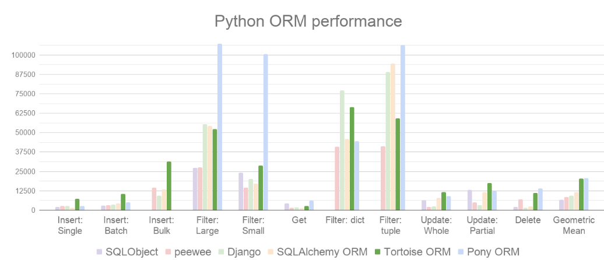

雪重
Python Developer
知识 汗水 灵感 机遇
Tortoise ORM一个易用高效的asyncio ORM
Python有许多现有的和成熟的ORM，不幸的是，它们的设计与I/O的处理方式相反。asyncio是一种相对较新的技术，具有不同的并发模型，最大的变化是关于如何处理I/O。Tortoise ORM的设计既实用又熟悉，以希望简化切换到asyncio。
与其他 Python ORM 相比，它也表现良好。

官方项目地址：https://github.com/tortoise/tortoise-orm/
官方文档地址：https://tortoise-orm.readthedocs.io/en/latest/
Tortoise ORM 目前支持以下数据库：
- PostgreSQL >= 9.4（使用
asyncpg） - SQLite（使用
aiosqlite） - MySQL/MariaDB（使用aiomysql或使用asyncmy）
1.简单使用
以操作sqlite数据库为例
首先，您必须像这样安装Tortoise ORM：
pip install tortoise-orm
定义你的模型models.py：
from tortoise.models import Model
from tortoise import fields
class Blog(Model):
"""
博客文章表
"""
id = fields.IntField(pk=True)
title = fields.CharField(max_length=500)
url = fields.CharField(max_length=300)
content = fields.TextField()
views = fields.IntField(default=0)
class Meta:
table = "blog"
初始化你的模型和数据库test.py：
from models import Blog
from tortoise import Tortoise, run_async
async def init():
await Tortoise.init(
db_url='sqlite://db.sqlite3',
modules={'models': ['models']}#models.py位置
)
# 建表,只运行一次即可，后边注释掉
await Tortoise.generate_schemas()
# 增删改查
run_async(init())
2.增删改查
代码放到上文test.py ”#增删改查“ 处即可运行
增
# 新增一篇博客文章
insert_data = {
"title": "测试title1",
"url": "https://www.baidu.com",
"content": "正文开始1"
}
bg = Blog(**insert_data)
await bg.save()
删
# 删除id=1的文章
await Blog.filter(id=1).delete()
改
# 修改id为1文章的title,views
insert_data = {
"id":1,
"title": "修改title1",
"url": "https://www.baidu.com",
"content": "正文开始1",
"views":666
}
bg = Blog(**insert_data)
# 当待修改部分的主键为空时，不会执行新增操作，报错
await bg.save(force_update=True)
# 或者用update_fields,当数据内容主键为空时，下边方法会插入，当主键不为空时会修改
# await bg.save(update_fields=insert_data.keys())
查
# 查询所有文章
await Blog.all().values()#values()返回一个list,[{"id":1},{"id":2}]
# 条件查询id=1的文章
await Blog.filter(id=1).values()
# 条件查询 title包含“python”的文章
await Blog.filter(title__contains="python").values()
# 条件查询 views>=10且<=1000的文章
await Blog.filter(views__gte = 10, views__lte = 1000).values()
# id 倒序
await Blog.all().order_by("-id")
# 分页
await Blog.all().order_by('-id').offset(int(page) * 20).limit(20).values()
# groupby
await Blog.annotate(sum=Sum(1)).filter(articleid__not='list').group_by("articleid").order_by('-sum').limit(3).values("articleid", "sum")
3.对于web开发框架的支持
对于Sanic、fastapi等有着很好的支持。
比如在Sanic中启用Tortoise ORM，so easy!
from sanic import Sanic
from tortoise.contrib.sanic import register_tortoise
app = Sanic(__name__)
register_tortoise(
app, db_url="sqlite://yourdb", modules={"models": ["models"]}, generate_schemas=True
)